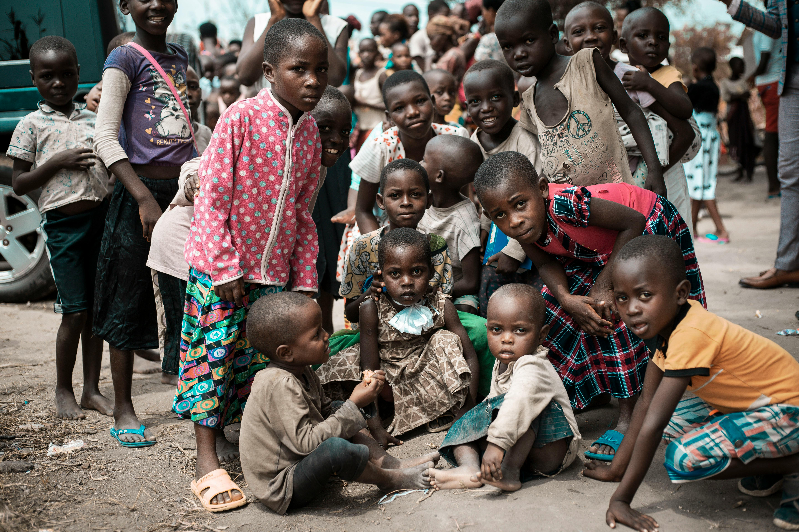
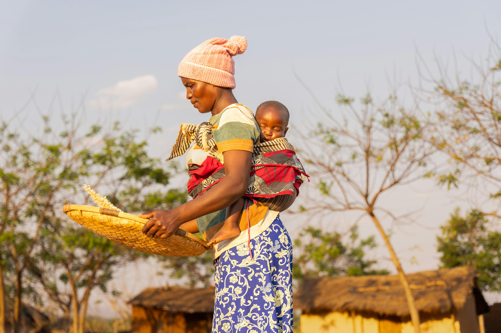
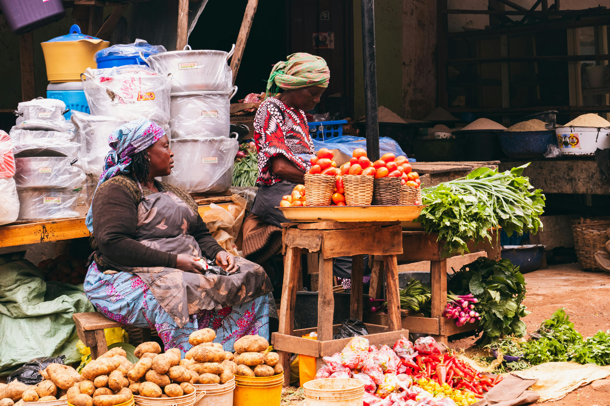

info@thecreats.org
info@thecreats.org
 (+1)
561-229-7519
(+1)
561-229-7519


.png)
.png)

Child Protection
With a child-centered approach, we work with communities to support vulnerable children through education, protection, healthcare, and basic needs assistance. Our programs focus on nurturing their growth, ensuring their safety, and empowering them with opportunities to build a brighter future and live a dignified life.

Youth Support
With a youth-centered approach, we work with communities to empower young people through skills development, education, mentorship, and employment opportunities. Our programs focus on building confidence, promoting innovation, and enabling youth to become self-reliant, responsible, and active contributors to a sustainable and dignified life.

Women Support
With a women-centered approach, we work with communities to empower women through economic support, skills training, education, and leadership development. Our programs focus on strengthening independence, promoting equality, and enabling women to build resilient livelihoods and live a dignified and fulfilling life.

Community Support
we work with local communities to strengthen social structures, improve access to basic services, and promote sustainable development. Our programs focus on building resilience, encouraging participation, and empowering communities to create safe, inclusive, and supportive environments where everyone can live a dignified and improved life.
.png)


.jpg)
.jpg)